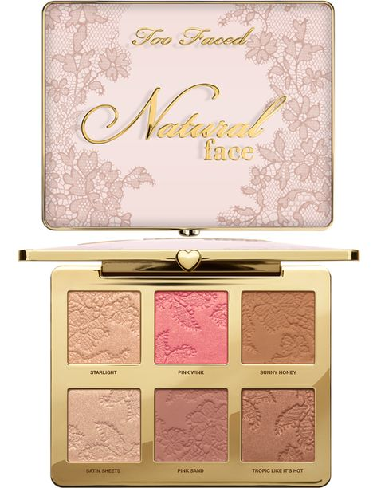
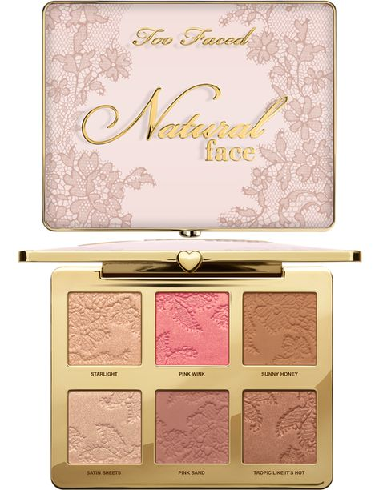

Welcome to Too Faced
Things About Too Faced
Popular cosmetics brand Too Facre is widely recognized for both its high quality products and fun, colorful design. In 1998 Jermy Jognson and Jerrod Blandino Launched Too Faced cosmetics. Blandino's apartment functioned as the duo's first production space.

 
